Guide de l'administration
Le portail web Speakora — gérer votre CPE, du premier enfant inscrit jusqu'au rapport envoyé aux parents.
1. Créer votre compte
Le compte Speakora de votre CPE se crée sur le portail web. La première personne à s'inscrire devient propriétaire de l'établissement; elle invite ensuite le reste de l'équipe depuis la section Équipe (voir la section 8).
- Rendez-vous sur admin.speakora.ca et cliquez sur Commencer, sous le formulaire de connexion.
- Remplissez le formulaire Commencer avec SPEAKORA : Prénom, Nom, Nom d'utilisateur (lettres seulement, 3 à 20 caractères), Adresse courriel et Mot de passe (au moins 8 caractères, dont une majuscule, une minuscule et un chiffre), puis cliquez sur Créer un compte.
- L'écran Vérifiez votre courriel confirme qu'un lien de vérification vous a été envoyé. Ouvrez ce courriel et cliquez sur le lien (valide 24 heures) : votre compte est activé et vous arrivez sur le tableau de bord.
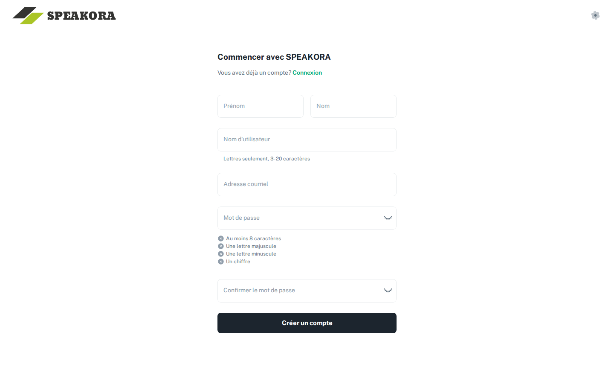
2. Se connecter au portail
- Rendez-vous sur le portail d'administration Speakora : admin.speakora.ca.
- Entrez votre courriel et votre mot de passe, puis connectez-vous. Le menu de gauche donne accès à toutes les sections : Tableau de bord, Enfants, Groupes, Tous les rapports, Code QR et Équipe.
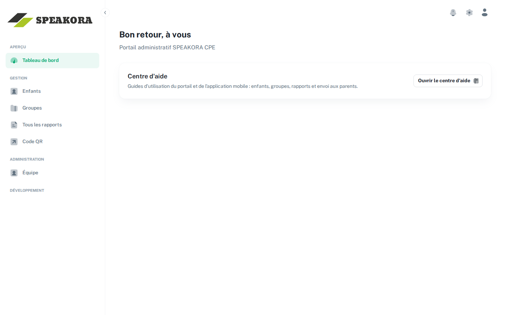
3. Inscrire les enfants avec le code QR
L'inscription des enfants se fait par les parents : ils remplissent eux-mêmes la fiche de leur enfant en scannant un code QR.
- Ouvrez la section Code QR du menu.
- Cliquez sur le bouton d'impression pour obtenir la version imprimable, puis affichez-la à l'entrée du CPE ou remettez-la aux parents.
- Les parents scannent le code avec leur téléphone et remplissent le formulaire d'inscription de leur enfant : nom, date de naissance, date d'entrée à la garderie (Fréquente depuis) et coordonnées des parents.
- L'enfant apparaît ensuite dans la section Enfants, sous l'onglet En attente d'approbation. Approuvez l'inscription (Approuver l'inscription) : l'enfant devient actif, prêt à être placé dans un groupe.
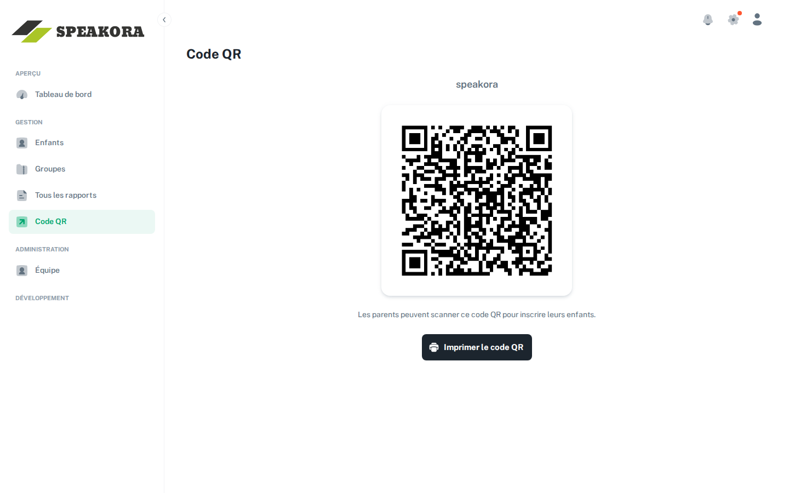
4. Gérer les enfants
La section Enfants liste tous les enfants du CPE. Cliquez sur un enfant pour ouvrir sa fiche, organisée en onglets :
- Aperçu — les informations de l'enfant : le groupe d'âge, la date d'entrée (Fréquente depuis, remplie par le parent à l'inscription et modifiable ici) et les courriels des parents (Courriel du parent et Courriel du 2e parent). Ces courriels servent à l'envoi des rapports : assurez-vous qu'ils sont exacts.
- Rapports — ses rapports de développement, en brouillon ou finalisés (voir la section 6).
- Observations — les observations enregistrées par les éducatrices.
- Grille de développement — la grille de développement de l'enfant.
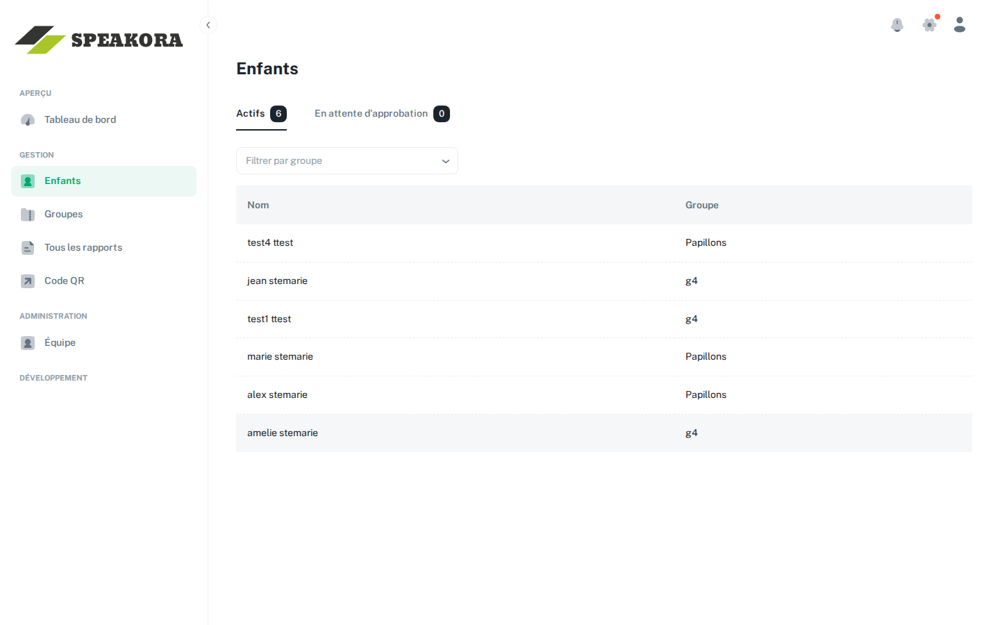
5. Organiser les groupes
Les groupes relient les enfants à leurs éducatrices : chaque éducatrice voit dans son application mobile les enfants de ses groupes.
- Ouvrez la section Groupes et cliquez sur Créer un groupe.
- Nommez le groupe (par exemple « Les papillons ») et ajoutez-y les enfants.
- Le nombre d'enfants s'affiche sur chaque groupe. Vous pouvez modifier la composition d'un groupe en tout temps, ou le supprimer avec Supprimer le groupe (les enfants ne sont pas supprimés, seulement le groupe).
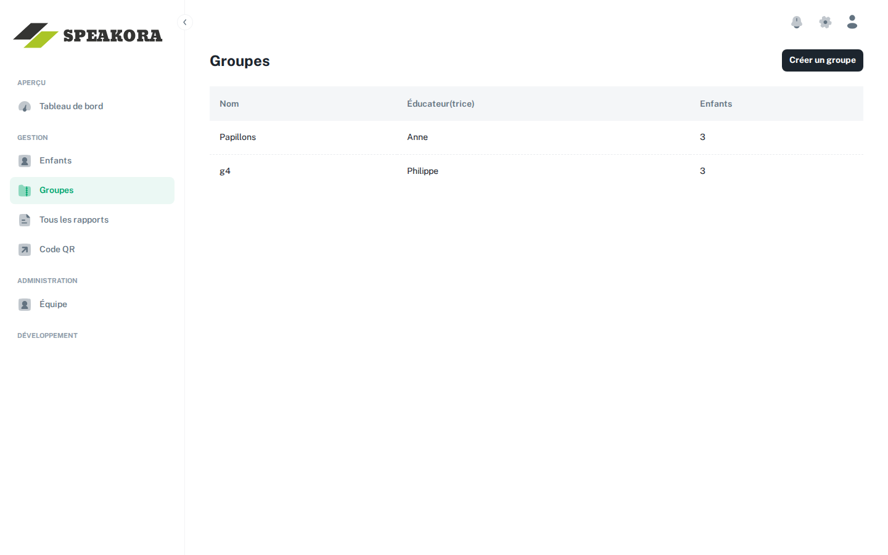
6. Générer et finaliser les rapports
Les rapports de développement périodiques — le « portrait » de l'enfant — s'appuient sur les observations enregistrées par les éducatrices. En temps normal, c'est l'éducatrice qui génère, retravaille et finalise le rapport depuis le portail (voir le guide de l'éducatrice); votre rôle est alors de réviser le rapport finalisé et de l'approuver. Vous pouvez aussi générer un rapport vous-même, depuis la fiche de l'enfant :
- Ouvrez la section Enfants, filtrez par groupe (Filtrer par groupe) et cliquez sur l'enfant voulu.
- Dans sa fiche, ouvrez l'onglet Rapports et cliquez sur Générer un rapport : Speakora assemble les observations de la période en un rapport structuré (message Rapport généré avec succès).
- Ouvrez le rapport pour le relire et vérifier son contenu.
- Quand le rapport vous convient, cliquez sur Finaliser. La finalisation verrouille les observations de la période dans l'application des éducatrices; vous pouvez repasser le rapport en brouillon à tout moment.
- Sur le rapport finalisé, cliquez sur Marquer comme approuvé (mention Approuvé par un admin). Cette approbation — réservée aux administrateurs — est obligatoire avant l'envoi aux parents; toute modification apportée au rapport après coup la retire, et il faudra approuver de nouveau.
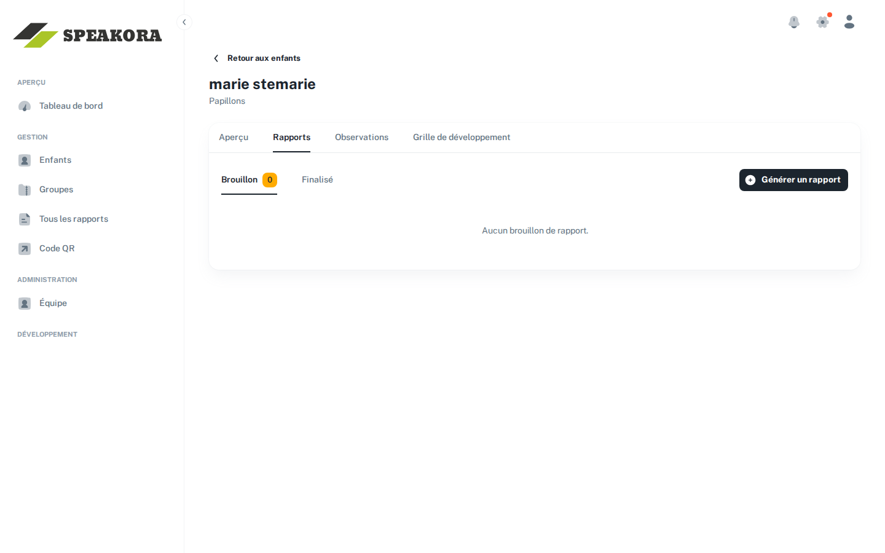
Pour suivre l'avancement de la période, la section Tous les rapports offre la vue d'ensemble : tous les rapports du CPE avec leur statut (onglets Brouillons et Finalisés), leur livraison, et des filtres par nom, groupe et dates.
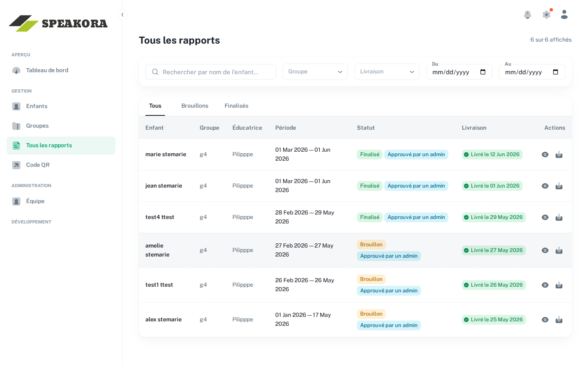
7. Envoyer aux parents et preuve d'envoi
L'envoi aux parents est une action distincte, réservée aux administrateurs, et possible seulement une fois le rapport Approuvé par un admin (voir la section 6).
- Sur le rapport approuvé, cliquez sur Envoyer aux parents.
- La fenêtre Envoyer le portrait aux parents affiche les adresses courriel qui recevront le PDF en pièce jointe — celles inscrites dans la fiche de l'enfant. Vérifiez-les, puis confirmez avec Envoyer.
- Suivez la livraison directement sur le rapport : Envoyé le…, puis Livré le… une fois le courriel arrivé à destination. En cas d'Échec de la livraison, corrigez l'adresse dans la fiche de l'enfant et utilisez Renvoyer.
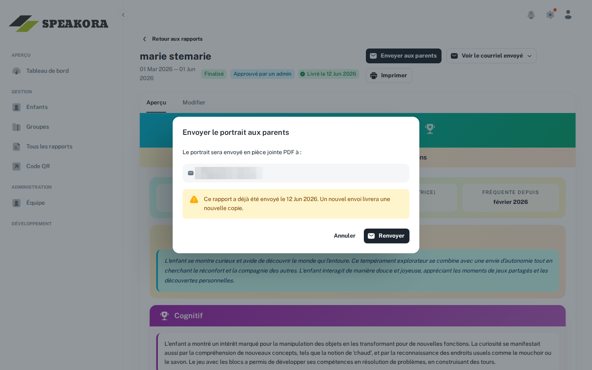
Pour vos dossiers :
- Télécharger le PDF envoyé — récupérez en tout temps le PDF exact qui a été transmis aux parents.
- Voir le courriel envoyé — ouvre l'enveloppe du courriel transmis au parent, une preuve d'envoi imprimable (destinataires, date), utile comme pièce justificative auprès du ministère.
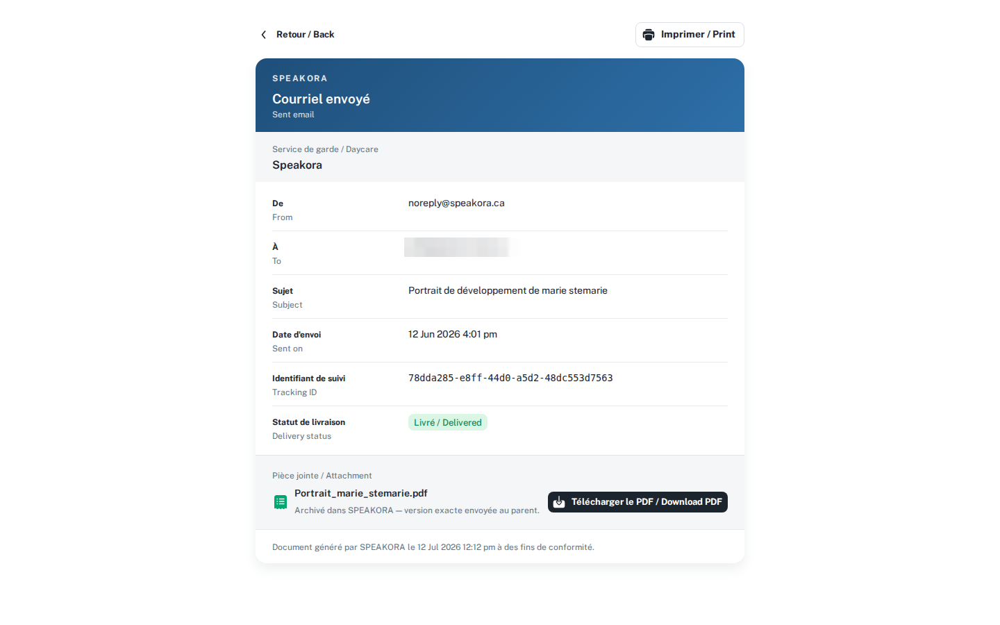
8. Gérer l'équipe
La section Équipe (visible pour les propriétaires et administrateurs, qui peuvent tous deux y gérer l'équipe) liste le personnel du CPE. C'est ici que vous donnez accès à l'application à une nouvelle éducatrice et que se définit le nom de l'Établissement affiché sur les rapports envoyés aux parents.
Inviter une éducatrice ou un administrateur
- Cliquez sur Ajouter un membre, entrez l'adresse courriel de la personne et choisissez son Rôle (Éducateur(trice) ou Admin), puis cliquez sur Ajouter.
- La personne reçoit par courriel une invitation à s'inscrire, dont le lien mène au formulaire d'inscription du portail (le même qu'à la section 1, son courriel déjà rempli). En attendant, elle figure sous l'onglet En attente avec son Rôle prévu; elle passe à Inscrit une fois son compte créé.
- Son compte est automatiquement rattaché à votre CPE avec le rôle choisi. Une éducatrice se connecte ensuite à l'application mobile avec ces mêmes identifiants.
Qui peut faire quoi dans cette section
- Propriétaire et admin — tout : consulter la liste des membres (onglets Actifs et En attente), Ajouter un membre, Changer le rôle d'un membre (Éducateur(trice) ou Admin), Retirer le membre (y compris les invitations en attente) et modifier le nom de l'Établissement.
- Éducatrice — n'a pas accès à cette section.
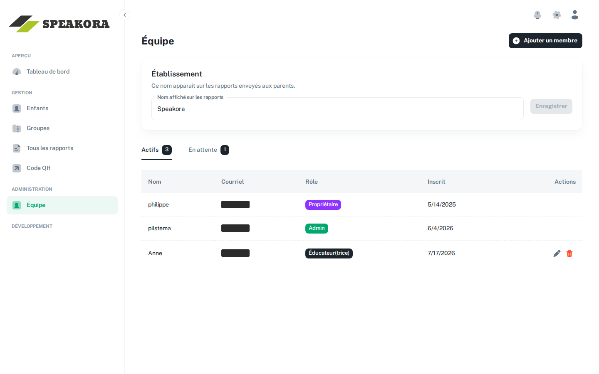
9. Paramètres du compte
Cliquez sur l'icône de profil en haut à droite de l'écran (encerclée ci-dessous), puis choisissez Paramètres du compte. Vous y définissez votre Signature — le nom qui apparaît sur les rapports envoyés aux parents et à côté de vos groupes. C'est aussi là que se trouve la suppression de compte (Supprimer le compte, une action irréversible).
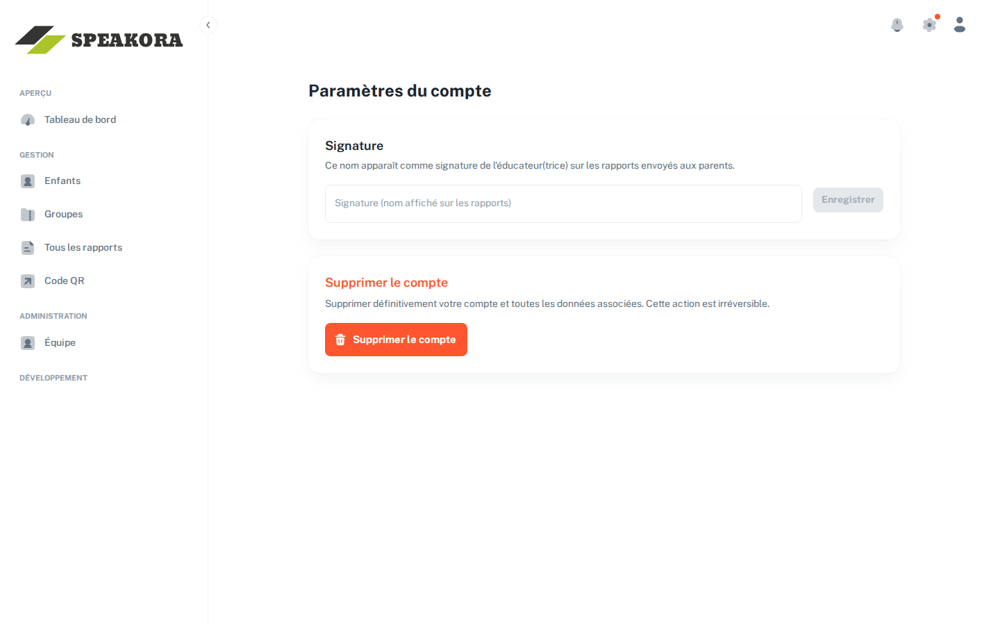
10. Questions fréquentes
Un parent n'a pas reçu le rapport par courriel.
Regardez le statut de livraison sur le rapport : s'il indique Échec de la livraison, corrigez l'adresse dans la fiche de l'enfant (onglet Aperçu) puis cliquez sur Renvoyer. Si le statut indique Livré, demandez au parent de vérifier ses courriels indésirables.
Puis-je modifier un rapport déjà finalisé?
Oui : repassez-le en brouillon, ajustez les observations au besoin, régénérez-le, puis finalisez de nouveau. Si le rapport avait déjà été envoyé aux parents, le PDF envoyé reste archivé tel quel — utilisez Renvoyer pour livrer la nouvelle version.
Une éducatrice ne voit pas ses enfants dans l'application.
Vérifiez que les enfants sont bien dans un groupe et que ce groupe est assigné à l'éducatrice (sections Groupes et Équipe).
Quelle est la différence entre supprimer un groupe et supprimer un enfant?
Supprimer un groupe ne touche pas aux enfants ni à leurs données. Supprimer un enfant efface définitivement toutes ses données (observations, rapports, grille de développement).